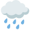

Pyrénées-Atlantiques, Ibardin
Distance
7Km
Durée moyenne
2h38min
Découvrez cet itinéraire en boucle de 8,2-km près de Labenne, Landes. Généralement considéré comme un parcours modéré.

Vendredi 03
Samedi 04
Dimanche 05
Lundi 06
Mardi 07
Mercredi 08
Jeudi 09
Vendredi 10
21°C
8Km
0mm 
Soleil min:6°C max:23°C
Vent min:6Km max:120Km
Pluie min:0mm max:01mm
Les chemins sont praticables même apres une forte pluie, il y a de l’ombre sur une grande partie du sentier et des plusieurs points d’eau sur le parcours.
Les chemins sont praticables même apres une forte pluie, il y a de l’ombre sur une grande partie du sentier et des plusieurs points d’eau sur le parcours.
Les chemins sont praticables même apres une forte pluie, il y a de l’ombre sur une grande partie du sentier et des plusieurs points d’eau sur le parcours.